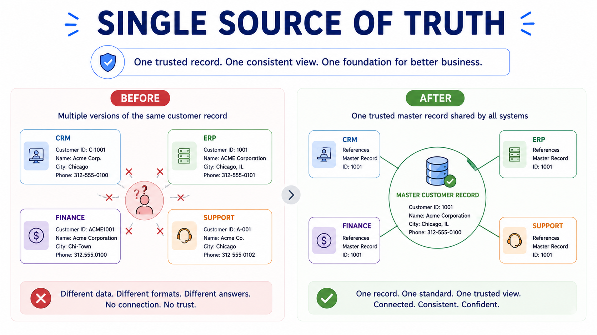

Single Source of Truth Concepts
Module support notes
When multiple systems store different versions of the same business information, trust erodes. Teams stop relying on reports. Decisions get made on incomplete data. And AI systems trained on that information inherit the confusion. Creating a single source of truth is how organizations address this — not by consolidating everything into one database, but by creating agreement about what is correct and ensuring that agreement holds over time.
Important distinction
A single source of truth is not the same as a single database. It means that for any given business entity, there is one agreed-upon, governed version that all systems and teams treat as correct. The goal is consistency and trust — not necessarily centralization.
Why trust is difficult to create
Different systems are designed for different purposes and managed by different teams. Customer information may look different in sales than it does in finance. Updates happen independently and definitions drift over time. As this complexity grows, organizations lose confidence in which version of information to trust — and that uncertainty is costly.

Governance keeps trust alive
Trust is not created once and then maintained automatically. Organizations use governance to define who owns information, how changes are approved, and how standards are applied across systems. Without ongoing governance, even well-managed information eventually becomes fragmented again.
Trusted data and AI
As organizations adopt AI, a single source of truth becomes even more critical. AI systems rely on consistent business context to generate useful outcomes. When business entities are duplicated or definitions are inconsistent across systems, AI receives conflicting inputs — and its outputs reflect that unreliability. A trusted business view is the foundation that makes AI dependable.